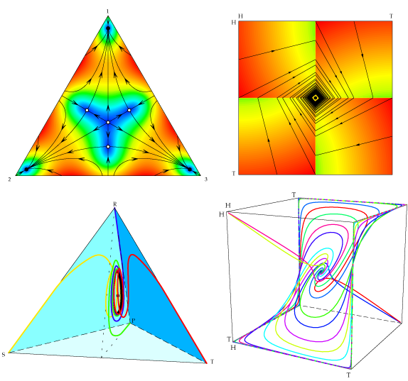

Dynamo is a suite of easy-to-use Mathematica notebooks for generating phase diagrams, vector fields, and other graphics related to evolutionary game dynamics.
The four phase diagrams above were generated using four of the five Dynamo workbooks. (In the first two figures, colors reflect speed of motion: blue is slowest, red is fastest.)
For more pictures and animations, visit the project gallery.
Dynamo now takes advantage of Mathematica's ability to perform live rotation of three-dimensional graphics.
Francisco Franchetti and I have written an introduction to Dynamo. We describe how to use the software's default settings to generate phase diagrams quickly and easily. We then explain how to take advantage of the software's intermediate and advanced features to create diagrams that highlight the key properties of the dynamical system under study. Sample code and output are provided to help demonstrate the software's capabilities.
Dynamo v1.3 - v1.4 runs in Mathematica versions 6 and later. It does not run in Mathematica 4 or 5. For the legacy version (0.1.5) that does, visit here.
Dynamo is free, open source software.
If you use Dynamo in your work (e.g., to create figures for articles or books), we would be grateful for your citation.
W. H. Sandholm, E. Dokumaci, and F. Franchetti (2012). Dynamo: Diagrams for Evolutionary Game Dynamics. http://www.ssc.wisc.edu/~whs/dynamo.
If citing computer programs is not allowed, please cite our introductory paper instead:
F. Franchetti and W. H. Sandholm (2013). "An Introduction to Dynamo: Diagrams for Evolutionary Game Dynamics". Biological Theory 8, 167-178.
I am maintaing a list of papers and books containing figures created in Dynamo - and here it is.
In 2003, I began working on Dynamo when I realized I would need to create many illustrations of game dynamics for my book on evolutionary game theory. Emin Dokumaci was the lead programmer of Dynamo from 2003-2007, and did most of the coding of the Mathematica 4/5 version of the software.
In 2007, Wolfram released Mathematica 6, which included some impressive new features (like rotatable 3D graphics), but also many small changes in the programming language that made code written for older versions of Mathematica behave badly. Grrrr. So the code was frozen, until...
In 2010, Francisco Franchetti became the new lead programmer of Dynamo, and he gamely updated the Dynamo code to run Mathematica 6/7.
In April 2011, Francisco and I completed a polished version of Dynamo 3S, which we have (after only eight years!) dubbed version 1.0. The corresponding updates of the other notebooks are underway.
In March 2012, Francisco and I finished a paper explaining how to use Dynamo, and posted a polished version of Dynamo 4S.
In July 2013, Francisco and I posted version 1.3 of Dynamo. This new posting includes a fifth notebook for two-population, 3 x 2 strategy games, as well as polished versions of the other two notebooks for multipopulation games. As part of this update, the code has been made much more consistent across the different notebooks.
EvoDyn-3s, by Luis Izquierdo, Segis Izquierdo, and me, is "baby Dynamo". It draws phase diagrams for three-strategy symmetric games, and is presented using a very simple graphical user interface. Introduction to EvoDyn-3s.
ABED: Agent-Based Evolutionary Game Dynamics, also by Luis Izquierdo, Segis Izquierdo, and me, runs agent-based simulations of evolutionary game theory models based on a wide range of revision protocols. It runs in the wonderful NetLogo modeling environment. Introduction to ABED.
The Gambit library, by Richard McKelvey, Andy McLennan, and Ted Turocy, provides a variety of tools for drawing and (especially) solving normal and extensive form games.
Christoph Hauert's VirtualLabs in evolutionary game theory provides tools for studying evolutionary dynamics in spatial games - that is, games played by agents located at points on lattices or other graphs. The animations are amazing - see for yourself!
Julián García and Matthijs van Veelen maintain an Evolution and Games wiki. It provides Java applets for running simulations of evolutionary game models, as well as tutorials on various topics in evolutionary game theory.
birds, by Kristaps Dzonsons and Jörgen Weibull, is a utility for simulating stochastic evolutionary game dynamics.
I am grateful for financial support from the National Science Foundation under grants SES-0092145, SES-0617753, SES-0851580, SES-1155135, SES-1458992, and SES-1728853, and from the Army Research Office under grant W911NF-17-1-0134 MSN201957.